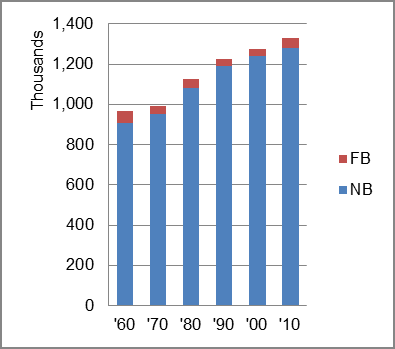

The foreign-born (FB) population decreased from 60,403 in 1960 to 45,666 in 2010. That was a decrease of 24.4 percent. The foreign-born share changed from 6.2 percent to 3.4 percent.
The share of the overall population that was native-born (NB) increased by 41.1 percent.
Maine: Population 1960-2010 
The first chart below shows the three population change factors for three periods adjusted for annual average amounts. The principal contribution to population increase changed from B-D in the earliest period to NDM in the second period. In the most recent period, there was a slight drop in population, NIM was the only factor adding population.
The second chart shows the same data but with an adjustment to reflect births to immigrants shifted to NIM. In it, NIM was a larger factor in population increase in the first two periods and the only factor offsetting population loss in the most recent period.
Maine: Sources of Population Change 1990-2013 Maine: Sources of Population Change (Adjusted) 1990-2013
B-D NDM NIM B-D NDM NIM 90-'99 88.6% neg. 11.4% 90-'99 71.7% neg. 28.3% 00-'09 23.8% 60.3% 15.9% 00-'09 9.6% 60.3% 30.1% 10-'13 neg. neg. all 10-'13 neg. neg. all